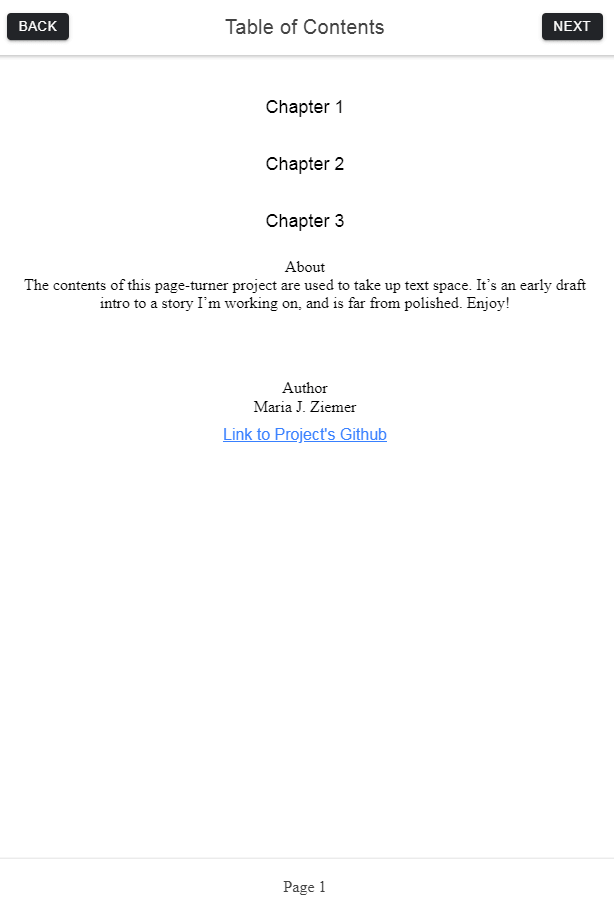

An Ionic Exercise for a Short Story
GitHub RepositoryCompleted for a Bethel Tech exercise, this project was centered around Ionic, a cross-platform mobile app framework based off of the Angular framework. It was used to create a page turner, which contained a short sample from one of my planned stories revolving around this dragon character, named Kierr'rocka. The page turner's front cover was created and designed by me, using Photoshop Elements.
Below is an image of the project's Table of Contents, used to navigate from one chapter to the next. NEXT and BACK buttons allowed for easy navigation between the individual pages.

Tools and languages used:
HTML | CSS | Angular | TypeScript (TS) | Cordova | Ionic | Node | Visual Studio Code | Photoshop | GitHub.